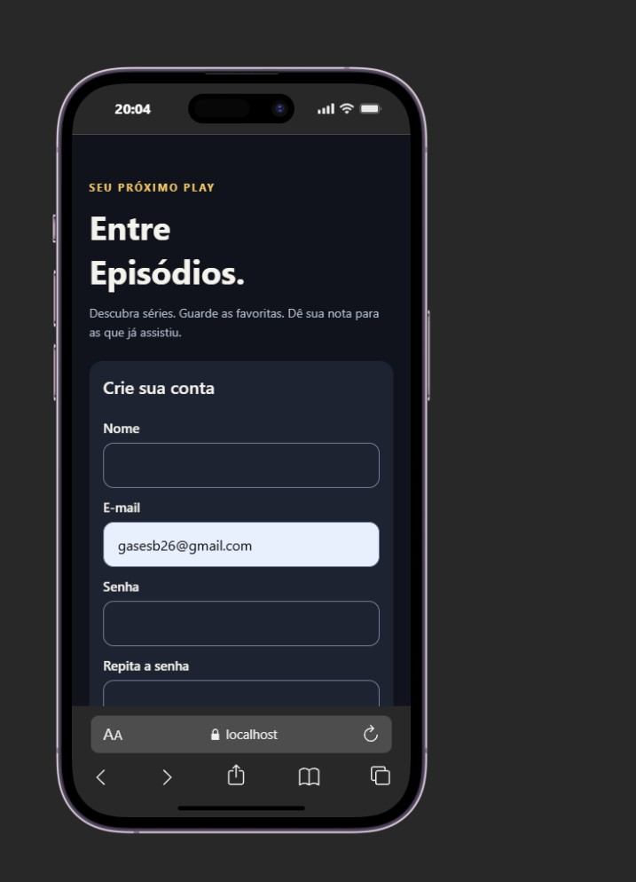
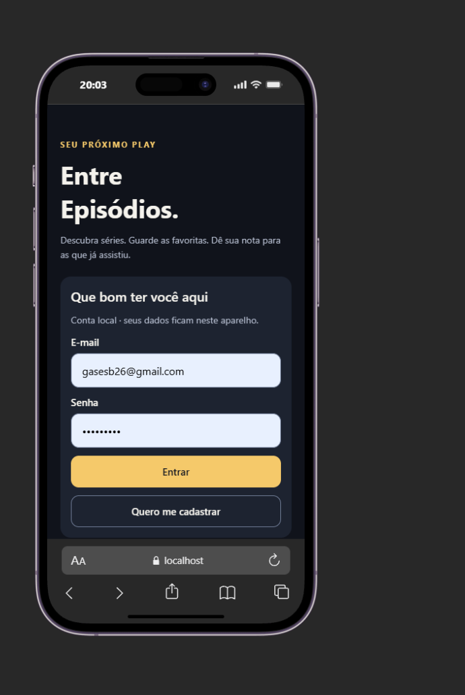
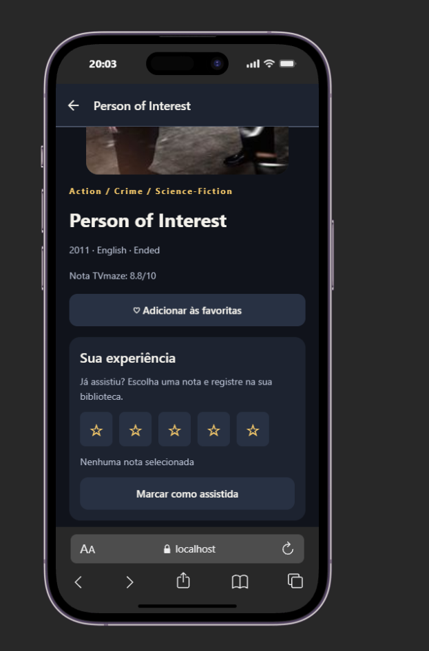
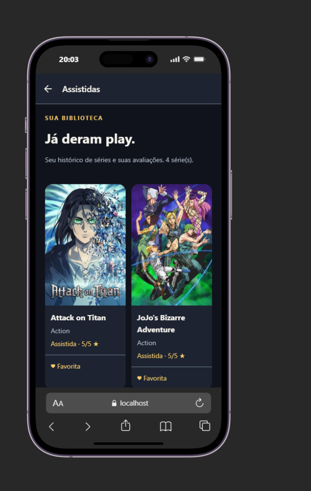
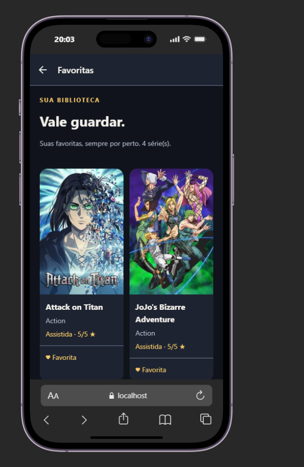
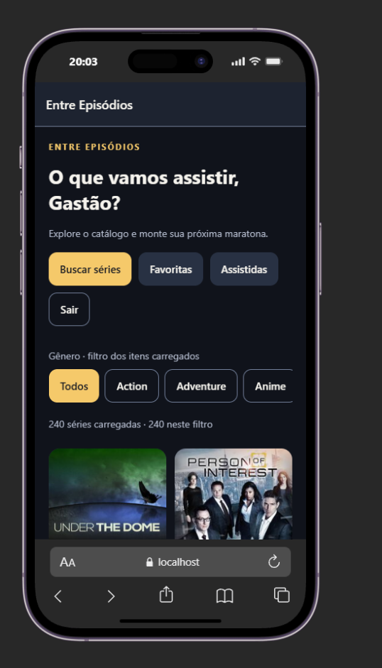

Catálogo interativo de séries
Tecnologias: React Native, Expo, TypeScript, TVmaze e Supabase.
Repositório público: https://github.com/ghastsantos/catalogo-interativo
O Entre Episódios é um catálogo de séries. A API TVmaze fornece catálogo, busca e detalhes. A pessoa pode favoritar séries, registrar o que assistiu e atribuir notas de 1 a 5.
A autenticação usa Supabase Auth. A biblioteca é associada à conta autenticada e protegida por PostgreSQL Row Level Security (RLS).
Todos os requisitos estão implementados no código. A classificação Sim registra a implementação; testes, exportações e capturas registram as evidências disponíveis.
| RF | Status | Implementação principal |
|---|---|---|
| RF01 | Sim | CatalogScreen, useCatalog, ShowGrid |
| RF02 | Sim | RootNavigator, DetailsScreen |
| RF03 | Sim | TVmaze, DetailsScreen |
| RF04–RF05 | Sim | LibraryContext, LibraryScreen |
| RF06 | Sim | LibraryContext |
| RF07 | Sim | AuthContext e Supabase Auth |
| RF08 | Sim | SearchScreen |
| RF09 | Sim | useRequest, useCatalog, Feedback |
| RF10 | Sim | Button, ItemCard, DetailsScreen |
Teste automatizado de nuvem: aprovado com duas contas distintas. A linha criada para teste é removida ao final do script.
No Flutter, Provider pode disponibilizar estado a uma parte da árvore de widgets. Neste app, Context API e hooks compartilham sessão e biblioteca entre telas. GridView.builder e FlatList com numColumns permitem construir listas extensas sob demanda. FutureBuilder representa estados de uma operação assíncrona; aqui, useEffect e estado React controlam carregamento, resultado e erro, com cancelamento da requisição no cleanup.
Completar com: tema/API do Somativo de Flutter, uma diferença prática observada e o que foi mais simples ou difícil em cada trabalho.
O Supabase Auth autentica as contas e fornece a sessão. Cada registro da biblioteca contém o identificador do usuário e o ID da série. A chave composta `(user_id, show_id)` evita duplicar a mesma série por conta.
As políticas RLS permitem que cada usuário leia, insira, atualize ou remova somente registros cujo `user_id` corresponde à sessão autenticada. O papel anônimo não tem acesso à tabela. O teste automatizado foi executado com duas contas: A leu a própria linha; B não conseguiu ler nem alterar essa linha; a chamada anônima foi negada.
As mudanças são sincronizadas automaticamente. Se houver falha, a fila mantém as alterações pendentes e o app tenta novamente com intervalos crescentes. O app também sincroniza ao voltar ao primeiro plano. Entre dispositivos, prevalece a última gravação recebida pelo servidor para cada série; o sistema não oferece edição colaborativa em tempo real.
Arquivos: `src/services/supabase.ts`, `src/services/cloudLibrary.ts`, `src/contexts/AuthContext.tsx`, `src/contexts/LibraryContext.tsx` e `supabase/migrations/001_library.sql`.
Imagens fornecidas pelo integrante. A captura de login contém um endereço de e-mail preenchido; revisar antes de publicar o PDF. A captura da busca ainda está pendente.






YouTube: https://www.youtube.com/watch?v=tl81xK8C9jU — duração de 6 a 9 minutos confirmada pelo integrante; definir visibilidade como Pública.
Duração exigida: 6 a 9 minutos. Todos os integrantes devem aparecer e falar. Tema técnico: Supabase Auth, RLS e sincronização, a partir de 5:30 (ajustar ao vídeo final).